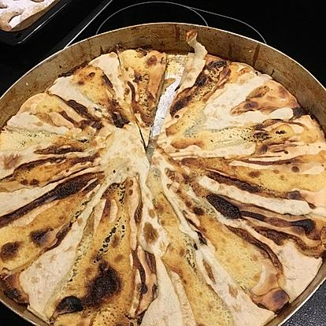

Fli

One of the hardest Albanian dishes. One has to be a wizard to make it
Layered pancake for every Albanian. Can be enjoyed with feta cheese or honey
Ingredients
Flour Batter
- 1kg of flour
- 1l of water
- 1 table spoon of salt
Batter filling - Option 1
- 220g Melted Butter
- 200ml Vegetable Oil
- 5 table spoon of Greek Jogurt
Batter filling - Option 2
- 220g melted butter
- 200ml vegetable oil
- 3 table spoon of clotted cream
Batter filling - Option 3
- 220g melted butter
- 500ml of sour cream
- 3 table spoon of olive oil
Steps
- Mix together the flour, water and salt ensuring all the lumps are dissolved. The mixture should be thick but still of a pouring consistency, add a little extra water if required. Put to one side.
- Mix together the butter, oil and chosen yogurt / cream ensuring all the lumps are dissolved. The mixture should be runny, leave to rest for 10 minutes before given it another good mix. The consistency should be similar to custard. Put to one side.
- Preheat the gill to a medium setting (I use mark 4 of 6). Take a large deep baking tray or pie pan and rub some olive oil over the base. Make the first layer of flour batter using a squirty bottle or laydel, don't try to pour the batter as it will be too thick in the pan. You need to make a star effect by leaving triangles between each line of batter layers. Place under the grill until golden brown. This will take between 3 - 5 minutes.
- Remove from under the grill and using a brush or the back of spoon rub over the whole pan (both battered and un-battered areas) a layer of the batter filling. Then, add a layer of the flour filling, use the same star effect this time placing the lines of batter through the gaps left from the previous layering. Also, leaving the same triangle shapes between each line. Place under the grill until golden brown. This will take between 3 - 5 minutes.
- Repeat step 4 until all the mixture has been used and ensuring each triangle gap is filled with flour batter on each layer - this will take around 2 hours. After every couple of layers, use one layer just to fill up any spaces (large gaps between the batter stars) that may have started to show.
- Once the Flija is ready serve straight away with honey or yogurt.